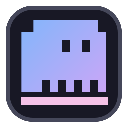

Helide
A terminal workspace for Windows. Git status, the Helix editor, a command runner, and opencode chat in one dark window.
>helide --version
loading…
Download for Windows
view source on github
git
Branch, status, and diff at a glance.
helix
The modal editor, always open.
runner
Run commands without leaving.
opencode
Chat with your codebase.